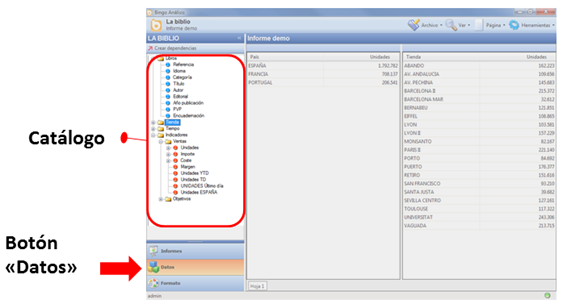
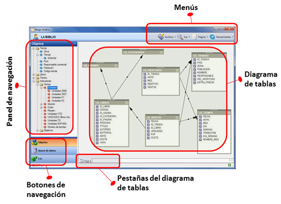

Definición
Los catálogos son la capa semántica de Bingo Intelligence y permiten a los usuarios realizar consultas sin tener conocimientos técnicos sobre la estructura de la base de datos ni el lenguaje SQL.
Gracias a los catálogos de Bingo Intelligence, los usuarios tienen una visión natural de sus datos de negocio, con una estructura y una terminología que les resulta familiar y fácil de utilizar.
Visión de usuario
En el interfaz de usuario de Bingo Análisis el creador de informes accede a las dimensiones, indicadores y filtros desde el panel de navegación. Al pulsar el botón “Datos”, el usuario tiene acceso a todos los elementos organizados por carpetas, y únicamente debe arrastrarlos a su informe para crear las consultas.

Diseñador de catálogos
El diseñador de catálogos es la interfaz que ofrece Bingo Análisis para crear, modificar y administrar los catálogos. Al crear un nuevo catálogo, o al abrir uno existente, Bingo Análisis muestra el diseñador de catálogos:

En el diseñador de catálogos existen los siguientes elementos:
- Diagrama de tablas: Muestra las tablas y relaciones de la base de datos.
- Pestañas: El catálogo puede tener varios diagramas y se puede acceder a ellos a través de las pestañas situados en el lateral inferior.
- Panel de navegación: Enel lateral izquierdo, existe un panel de navegación que muestra en forma jerárquica los diferentes objetos del catálogo (objetos de negocio que verán los usuarios, tablas de la base de datos, tablas importadas, etc.)
- Menús: Incluye las opciones generales de Bingo Intelligence (abrir, guardar...) y algunas específicas del “Diseñador de catálogo” (propiedades del catálogo, conexiones, ...).
- Botones de navegación: Permite seleccionar el panel de navegación visible.
Características avanzadas
Los catálogos de Bingo Intelligence incluyen las siguientes características avanzadas:
- Posibilidad de conexión a cualquier base de datos relacional
- Posibilidad para definir y organizar libremente las dimensiones, indicadores y filtros (con independencia de la estructura de la base de datos).
- Uso del dialecto propio de cada gestor de base de datos.
- Sin restricciones en el modelo de datos (admite modelos en estrella, normalizados, copo de nieve, o cualquier otro).
- Multiconsulta: Si no es posible obtener los datos solicitados en una única consulta, Bingo Intelligence generará el número de consultas que sea necesario para obtener los resultados.
- Sincronización de diferentes consultas para mostrar un único resultado al usuario
- Libertad para definir las relaciones entre tablas (incluso mediante relaciones personalizadas y no estándar).
- Listas de valores de las dimensiones
- Filtros avanzados (mes anterior, mes equivalente, P1, periodo variable, ...)
- Indicadores avanzados (year-to-date, month-to-date, saldos, acumulados,...)
- Ordenaciones personalizadas
- Uso de tablas agregadas (reescritura de consulta)
- Relaciones alternativas
- Tablas derivadas
- Seguridad horizontal (para poder limitar la información a la que tiene acceso cada usuario).
- Data-profiling de tablas y dimensiones
- Detección de cambios en la estructura de la base de datos
- Verificación de la integridad de los datos y la corrección de las relaciones
Siguientes pasos
En el artículo sobre cómo crear un catálogo, y en resto de apartados de este manual, se introducen y explican con mayor detalle estas funcionalidades.